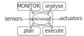
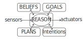

Multi-Paradigm Integration for the BDI Resurgence
Danilo Pianini, Martina Baiardi, Samuele Burattini, and Giovanni Ciatto
m.baiardi@unibo.it
Department of Computer Science and Engineering (DISI)
Alma Mater Studiorum — Università di Bologna
Via dell’Università 50, 47522 Cesena (FC), Italy
Context
Autonomic Computing

MAPE-K
Reference model for Autonomic and self-* systems design.

BDI
Reference framework (AgentSpeak(L)) for Multi-Agent Systems.
Why isn't BDI common in autonomic loops?
The idea is not new
It simply disappeared
grafico.
Beliefs, Desires, Intentions
- It’s a framework to model Multi-Agent Systems through Goals
- Imperative Paradigm and Functional Paradigm are suboptimal to do so
- Huge abstraction gap between instruction and notion representation
- BDI tries to minimise this gap in the abstraction
- Mimicking human-level notions such as beliefs, desires and intentions
Beliefs, Desires, Intentions
Agents are modeled through three main abstractions:
- Beliefs: mental state of the agent, that changes over time.
- Desires: motivational state of the system.
- Intentions: deliberative state of the agent.
---
[1] Bratman, Michael. "Intention, plans, and practical reason." (1987)
[2] Anand S. Rao and Michael P. Georgeff. "BDI agents: From theory to practice." (1995)
[3] Anand S. Rao. "Agentspeak(l): BDI agents speak out in a logical computable language." (1996)
BDI Agent Programming Languages
… some of them

[1] Collier, R.W., Russell, S.E., Lillis, D.. "Reflecting on agent programming with AgentSpeak(L). I" (2015)
[2] Hindriks, K.V.. "Programming rational agents in GOAL." (2009)
[3] Pokahr, A., Braubach, L., Lamersdorf, W.. "Jadex: A BDI reasoning engine." (2005)
[4] Bordini, R.H., Hübner, J.F., Wooldridge, M.J.. "Programming Multi-Agent Systems in AgentSpeak using Jason." (2007)
[5] D’Urso, F., Longo, C.F., Santoro, C.. "Programming intelligent iot systems with a python-based declarative tool." (2019)
[6] Palanca, J., Rincon, J.A., Carrascosa, C., Julián, V., Terrasa, A.. "A flexible agent architecture in SPADE." (2022)
[2] Hindriks, K.V.. "Programming rational agents in GOAL." (2009)
[3] Pokahr, A., Braubach, L., Lamersdorf, W.. "Jadex: A BDI reasoning engine." (2005)
[4] Bordini, R.H., Hübner, J.F., Wooldridge, M.J.. "Programming Multi-Agent Systems in AgentSpeak using Jason." (2007)
[5] D’Urso, F., Longo, C.F., Santoro, C.. "Programming intelligent iot systems with a python-based declarative tool." (2019)
[6] Palanca, J., Rincon, J.A., Carrascosa, C., Julián, V., Terrasa, A.. "A flexible agent architecture in SPADE." (2022)
Why community interest decreased for bdi tecnologies?
BDI frameworks didn’t follow latest technological developments:
- Interoperability with other General Purpose Languages (GPL), improving modularity of a system implementation
- Seamless adoption of the most suitable paradigm (FP, OOP, IP, LP)
- Integration with existing development tools (IDEs, code suggestions, syntax highlighters, linters…)
JaKtA:
Jason-like Kotlin Agents [1]
Internal Domain-Specific Language (DSL) implemented in Kotlin
- Multi-paradigm support: OOP + FP + BDI AOP
- Hosted on a mainstream language: gentle learning curve
- Great learning resources for Kotlin
- Significantly large community for help
- Reuses the entire existing Kotlin toolchain
- Developed and maintained by the language maintainers and the community
- Maintenance is greatly reduced
- Good ergonomy
---
[1] Baiardi, M., Burattini, S., Ciatto, G., & Pianini, D. (2023, September). JaKtA: BDI Agent-Oriented Programming in Pure Kotlin.
[1] Baiardi, M., Burattini, S., Ciatto, G., & Pianini, D. (2023, September). JaKtA: BDI Agent-Oriented Programming in Pure Kotlin.
Future work
JaKtA is still in its early stages, in the future we plan to:
- Provide stable tools to emulate dynamic environments (Simulation)
- Expose BDI abstractions within the debugger for helping bug inspection (Debug)
- Experiment JaKtA integration with other tools by experimenting pactical use cases (for example: drone swarm coordination)